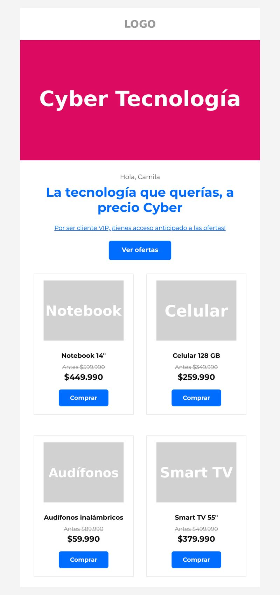
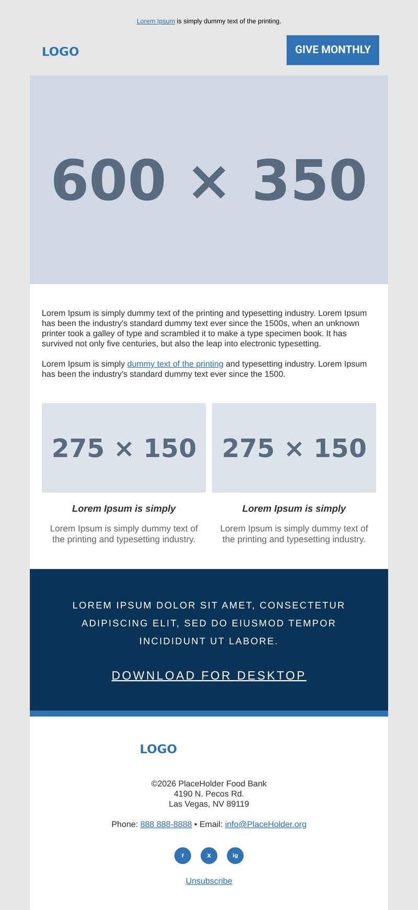
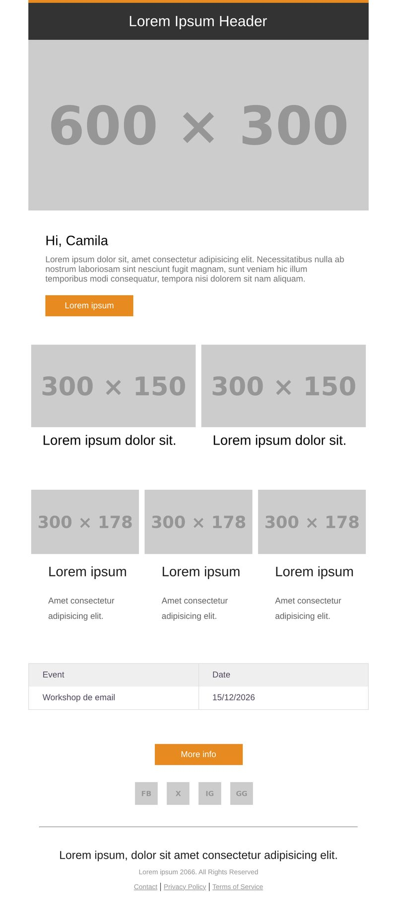
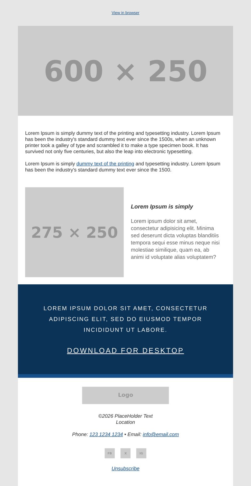

Welcome and course-progress journeys
Journeys de bienvenida y progreso de cursos
Context
Contexto
Students bought online courses but often lost momentum. The goal: welcome them, keep them engaged and invite them to a next course.
Los estudiantes compraban cursos online, pero muchos perdían el ritmo. El objetivo: darles la bienvenida, acompañarlos y ofrecerles un próximo curso.
What I did
Qué hice
- Designed an automated journey triggered by each student's progress.
- Diseñé un journey automatizado que se activa según el progreso de cada estudiante.
- Built segments from newsletter audiences.
- Armé segmentos a partir de las audiencias de newsletters.
- Ran A/B tests on send time, subject lines and content.
- Hice tests A/B de horario de envío, asunto y contenido.
The journey
El journey
- PurchaseCompraStudent buys a courseCompra un curso
- WelcomeBienvenidaAccess + first stepsAcceso y primeros pasos
- 25%25%Keep the momentumMantener el ritmo
- 50%50%Halfway reminderMitad del camino
- 75%75%Almost thereCasi terminando
- CompletedFinalizadoCongrats + certificateFelicitación
- Next coursePróximo cursoDiscount offerOferta con descuento
Results (approximate)
Resultados (aproximados)
- ~90% of students who started a course finished it with the progress journeys.
- ~90% de quienes empezaban un curso lo terminaban con los journeys de progreso.
- +20% more people bought another course after the welcome journey.
- +20% de personas compraron otro curso después del journey de bienvenida.
- +15% open rate after testing subject lines and send times.
- +15% en la tasa de apertura al testear asuntos y horarios de envío.
- −30% emails landing in spam after moving from image-only emails to text with separate images.
- −30% de emails en spam al pasar de emails hechos con una sola imagen a texto con imágenes sueltas.
View past work templatesVer plantilla de trabajos realizados

The hero, title and link change with each person's favourite category, and VIP customers see an extra line. Ready for dark mode and Outlook.
El hero, el título y el link cambian según la categoría favorita de cada persona, y los clientes VIP ven una línea extra. Preparado para modo oscuro y Outlook.
An in-app message for a Cyber sale: tap the balloon and win a random prize. VIP customers always win. The result is saved in Braze as a custom event.
Un mensaje in-app para el Cyber: tocás el globo y ganás un premio al azar. Los clientes VIP siempre ganan. El resultado se guarda en Braze como evento.

A template built from a design: columns that stack on mobile, a bulletproof button and a background image that also works in Outlook (VML).
Una plantilla maquetada a partir de un diseño: columnas que se apilan en celular, botón a prueba de Outlook e imagen de fondo que también funciona en Outlook (VML).

The greeting, event name and date come from variables. One, two and three column blocks that stack on mobile.
El saludo, el nombre del evento y la fecha salen de variables. Bloques de una, dos y tres columnas que se apilan en celular.

Image and text in two columns, a background image that also works in Outlook (VML) and a footer with social links.
Imagen y texto en dos columnas, imagen de fondo que también funciona en Outlook (VML) y footer con redes.